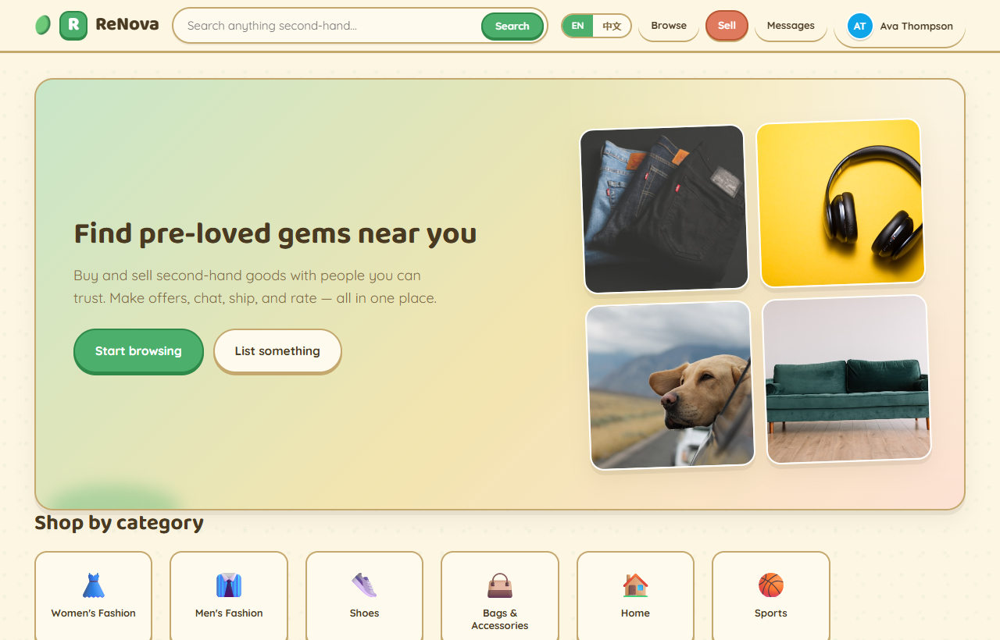
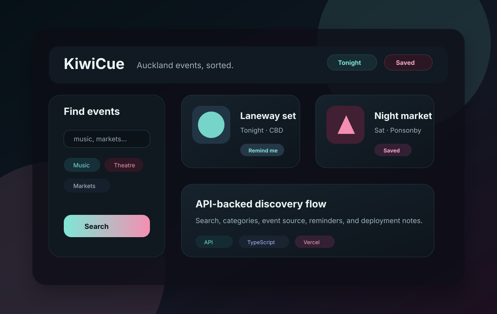

User workflow
I start from what a person is trying to do: discover events, list an item, import retail data, or get from a screen to a useful result.
Full-stack web applications / APIs / databases
Master of IT student building full-stack web applications with Java, Spring Boot, Vue, React, Node.js, and databases.
I like finding real needs in everyday workflows and turning them into practical software projects that people can inspect, run, and use.
Profile
My background in Business Analytics helps me notice real workflow problems. My Master of IT work is where I turn those problems into frontend screens, backend routes, data models, and deployable projects.
I start from what a person is trying to do: discover events, list an item, import retail data, or get from a screen to a useful result.
I care about clear routes, reusable services, validated inputs, sensible state, and database models that match the product rules.
I try to make projects easy to inspect with README files, screenshots, test commands, local setup notes, and links to the relevant code.
Process
I like building one thin path end to end first, then improving the interface, data model, and checks once the core workflow is visible.
Problem first
For a project like ReNova, I start by naming the real entities: users, listings, offers, orders, reviews, and the rules that move each one between states.
API shape
I look for route names, payloads, validation, and response states that make the frontend easier to reason about rather than hiding product rules in click handlers.
Small working version
I prefer a thin but complete workflow first: frontend, API, storage, and one clear result. It exposes problems faster than a large unfinished layout.
Verification
I check setup steps, responsive layouts, form validation, broken links, and whether the README gives another developer enough context to run or inspect the work.
Projects
These are the three projects I would show first for software engineering roles. Each card links to the GitHub README so the code and project notes are easy to inspect.
Showing all selected projects.

LiveJava full-stack marketplace
A peer-to-peer second-hand marketplace with listings, search, buyer-seller messaging, offers, orders, demo escrow states, reviews, and user reputation.

TypeScript event discovery app
A bilingual Auckland event discovery and reminder service for helping people find concerts, theatre, markets, festivals, and community events before they miss them.

TypeScript full-stack analytics system
A full-stack analytics platform that turns retail sales and inventory CSVs into KPI dashboards, product performance, inventory risk, channel comparison, and weekly reports.
Notebook
Inspired by strong engineering blogs, I want this site to become more than a list of projects. These are the notes I would like to publish as I keep learning and building.
Listings, offers, orders, reviews, and why state transitions matter in practical full-stack applications.
Screenshots, setup steps, environment notes, known limits, and the small details that help another developer trust the work.
Why I like making one route, one screen, one database path, and one testable result work before polishing the whole app.
What I learned from keeping third-party API keys server-side and documenting deployment steps clearly.
How business questions can help shape forms, dashboards, filters, and reports without making the software feel vague.
Skills
A focused stack for full-stack applications, APIs, databases, testing, and delivery.
Builds backend services, domain logic, and API foundations for full-stack projects.
Contact
I am especially interested in teams building web applications, data-backed products, internal tools, and practical software that solves everyday workflow problems.
Quick launch